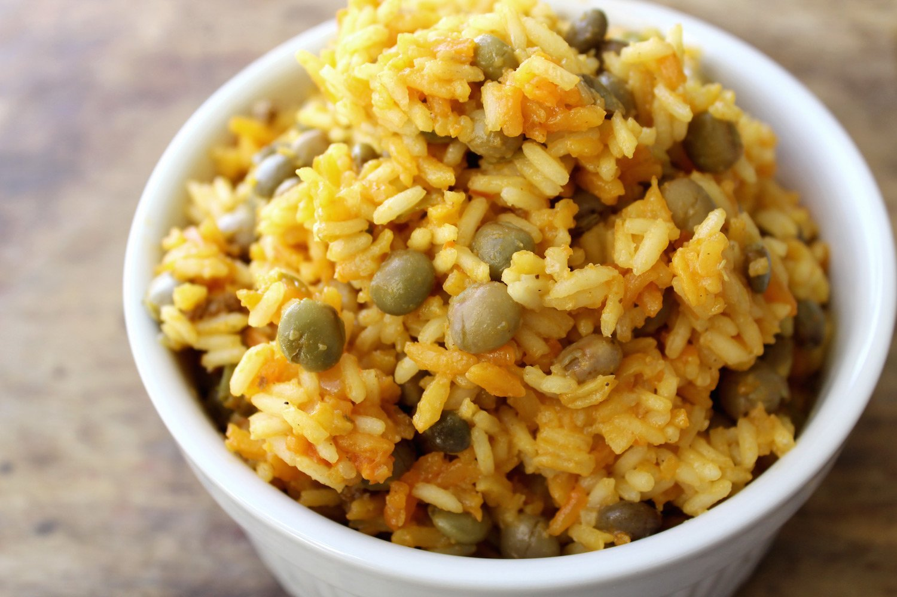

Puerto Rican Arroz con Gandules

Description
Arroz con Gandules is a classic Puerto Rican side, a staple of any traditional meal. The long grain rice has a pleasant, soft texture; complilmented by the addition of pigeon peas or gandules as they are known to spanish speakers.
There are countless variations to this recipe as every familly does it their own way. With that being said, there is no right way to prepare this dish.
Ingredients
- 1 TBS oil (Vegitable or Olive is fine
- 1 15oz can Pigeon Peas (Gandules)
- 1 8oz can Tomatoe Sauce
- 3 cups Water
- 2 cups Long Grain rice
- 1 chicken bouillon
- 1 Packet Sazon con Achote
- 1 TBS Adobo
- 1 TBS Sofrito
- 1 TBS Minced Garlic
Recipe Instructions
- Place oil, sofrito, garlic, adobo, and sazon in large pot, stir and simmer on medium low heat until aromatic. (Preferable using a caldero)
- Add tomato sauce and Gondules to pot, mix and simmer for 5 mintues
- Add the water and bouillon, raise the heat to hight. Cover and wait until water starts to boil.
- When water begins to boil, remove lid and stir mixture. Then add rice and stir mixture again. Keep uncovered and let boil.
- Wait about 5 minutes and then cover. Lower heat to low and wait 25-30 mintues.
- Once the time is up, remove lid and stir rice. If rice is too wet raise heat to medium low and stir occasionally until rice reaches desited consitency. If rice it too dry add a little bit more water and continue cooking uncovered, stirring occasionally until rice reached desited consistency.
Return to main page